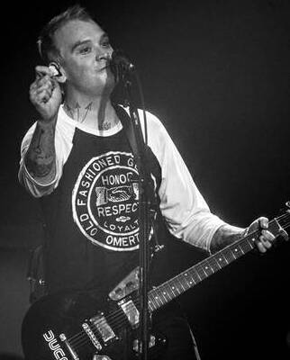

Matthew Thomas Skiba (né le 24 février 1976) est un musicien, chanteur
et auteur-compositeur américain, connu pour son rôle de chanteur et
guitariste fondateur du groupe Alkaline Trio et a également été
guitariste et co-chanteur du groupe Blink-182 de 2015 à 2022. Le
contenu lyrique de Skiba implique généralement des thèmes romantiques
sombres. Alkaline Trio s’est formé en 1996 avec Skiba comme frontman.
Depuis, le groupe a sorti neuf albums complets sur deux décennies.
Skiba a également enregistré des albums avec des projets secondaires,
dont Heavens and the Hell, ainsi que deux albums solo avec son groupe
de soutien, les Sekrets. Après le deuxième départ de Tom DeLonge de
Blink-182 au début de 2015, Skiba a été embauché comme guitariste en
tournée pour trois concerts avant de devenir membre officiel plus tard
la même année; il a enregistré deux albums avec le groupe, California
(2016) et Nine (2019), avant le retour de DeLonge en 2022.
Jeunesse et famille
Matthew Thomas Skiba est né le 24 février 1976 à Chicago, Illinois, et
a grandi à McHenry, Illinois. Il a commencé à jouer du piano et de la
batterie à un âge précoce. Son premier concert est Public Image Ltd.
En 1996, alors qu’il travaille comme coursier à vélo, il décide de
passer de la batterie à la guitare. Avant cela, il a joué dans des
groupes tels que Blunt, Jerkwater et The Traitors. Sa mère, Joan
Skiba, est enseignante de quatrième et de cinquième année à l’école
primaire Woods Creek à Crystal Lake, dans l’Illinois. Son père, Thomas
Skiba (1942-2022), chirurgien dentiste à Crystal Lake, a servi pendant
la guerre du Vietnam et a deux sœurs jumelles plus jeunes.
Alkaline Trio
Skiba étudie le design au Columbia College de Chicago mais part en
1996 pour former Alkaline Trio avec le batteur Glenn Porter et le
bassiste Rob Doran. Après avoir enregistré leur démo et le single
"Sundials", ils ont enregistré l’EP For Your Lungs Only, au cours
duquel Doran a quitté le groupe. Dan Andriano a rejoint et joué de la
basse sur l’EP. Le groupe sort son premier album Goddamnit sur Asian
Man Records en 1998, suivi de Maybe I’ll Catch Fire et de la
compilation Alkaline Trio en 2000.
La formation du groupe change à nouveau en 2000 lorsque Porter quitte
le groupe et l’ancien batteur de Smoking Popes, Mike Felumlee, le
rejoint. From Here to Infirmary, publié par Vagrant Records au
printemps 2001. En 2002, Jade Tree Records a sorti un split EP Hot
Water Music/Alkaline Trio qui a été bien reçu. Les deux groupes ont
contribué des pistes originales et des reprises des chansons de
l’autre. Good Mourning a suivi en 2003, marquant le premier album du
groupe avec le batteur Derek Grant, anciennement de Suicide Machines
et Thoughts of Ionesco. Lors de l’enregistrement de Good Mourning,
Skiba a eu un problème de reflux acide en raison de son régime
alimentaire, du manque d’échauffement vocal et de ses problèmes
antérieurs avec l’alcool et les drogues.
Après une tournée et une opération pour corriger le reflux acide de
Skiba, le groupe enregistre et sort Crimson en 2005 et la compilation
Remains en 2007. Agony & Irony, leur premier et unique album sur Epic
Records, est sorti en juillet 2008. En janvier 2010, ils ont sorti
This Addiction sur leur propre label Heart & Skull en partenariat avec
Epitaph Records. En juillet 2011, ils sortent un album semi-acoustique
appelé Damnesia pour commémorer 15 ans en tant que groupe. Leur
huitième album, My Shame Is True, est sorti le 21 avril 2013. En 2014,
le groupe a effectué une tournée d’anthologie connue sous le nom de
"Past Live Tour", dans laquelle ils ont interprété leurs huit premiers
albums studio dans leur intégralité à travers quatre dates. Après une
pause de cinq ans en studio et une deuxième chirurgie de la gorge pour
Skiba, le groupe sort son neuvième album, Is This Thing Cursed ? , le
31 août 2018.
Blink-182
Après le départ de Tom DeLonge de Blink-182 en 2015, Mark Hoppus a
annoncé que Skiba "remplirait" le groupe et a donné deux spectacles de
club et une place au festival Musink en mars 2015. Plus tard cette
année-là, le groupe confirme que Skiba est maintenant un membre
officiel et qu’il apparaîtra sur leur prochain album. L’album
résultant California, est sorti le 1er juillet 2016. Skiba réapparaît
sur le huitième album studio du groupe, Nine, sorti le 20 septembre
2019. Cependant, il n’est pas apparu sur le single "Quarantine" du
groupe en 2020, faute de studio d’enregistrement à domicile.
En juillet 2022, Skiba a déclaré dans un commentaire Instagram que son
statut avec Blink-182 était incertain tout en disant qu’il était
reconnaissant pour son temps dans le groupe. En octobre 2022,
Blink-182 a annoncé que DeLonge était officiellement de retour dans le
groupe. Skiba était absent du matériel promotionnel, confirmant ainsi
son départ. DeLonge a envoyé un message à Skiba sur Instagram pour le
remercier d’avoir passé du temps avec le groupe, puis a partagé la
publication publiquement sur son compte. Skiba a lui-même reposté une
partie du matériel promotionnel du nouveau single sur son compte
Instagram, a félicité le groupe pour la réunion de leur line-up
classique et a exprimé sa gratitude pour son temps dans le groupe.
Side projects et solo
En 2001, il commence sa première tournée solo complète avec The Plea
for Peace Tour, composée principalement de versions acoustiques de
chansons Alkaline Trio avec batterie et basse dans quelques
spectacles. Sa première sortie solo a eu lieu en 2002 sous la forme
d’un split avec Kevin Seconds of 7 Seconds. Les chansons étaient
principalement acoustiques avec batterie, basse et piano joué par
Skiba. Alkaline Trio interprète encore occasionnellement la chanson
"Good Fucking Bye". En 2005, Skiba a contribué la chanson "Demons
Away" à la compilation de Fat Wreck Chords Protect : A Benefit for the
National Association to Protect Children.
En 2006, Skiba lance le groupe Heavens avec le bassiste F-Minus Josiah
Steinbrick. Le groupe publie Patent Pending le 12 septembre 2006.
Toujours en 2006, Skiba a contribué au titre "Rock 'n' Roll High
School" sur Brats on the Beat : Ramones for Kids, un album hommage
sorti sur Go-Kart Records. En mai 2007, Skiba a donné cinq shows avec
Chuck Ragan de Hot Water Music. À la fin de décembre 2008, Steinbrick
a annoncé sur la page MySpace de Heavens, "Ce n’est plus une page
Heavens. Désolé, c’est juste la façon dont cela se passe. Matt fera
toujours des trucs de Trio et la dernière fois que j’ai entendu dire
qu’il pourrait travailler sur un magnifique album solo. Je ne suis pas
vraiment positif, mais je suis sûr que ce sera génial. » Une dispute
entre Skiba et Steinbrick a mené à la rupture. Le 18 août 2009, au
Debonair Social Club de Chicago, Skiba, Grant et Greg Corner et Jonny
Radtke de Kill Hannah font leurs débuts dans le groupe de reprises
Them Crooked Vulvas (et jouent parfois sous le nom de A Perfect
Circus).
Le 10 août 2010, il sort un album solo intitulé Demos on Asian Man
Records. L’album est dit être un précurseur d’un futur album Alkaline
Trio. En janvier 2012, Skiba sort un EP avec Angels and Airwaves et
The Offspring batteur Atom Willard sous le nom de l’enfer. Le premier
EP de The Hell s’intitule Sauve Les Requins. Le deuxième album solo de
Skiba, Babylon, est sorti le 8 mai 2012. L’album présente Skiba à la
tête d’un groupe appelé Matt Skiba et les Sekrets; le groupe de
soutien comprend le bassiste AFI Hunter Burgan, et ancien batteur en
tournée pour My Chemical Romance Jarrod Alexander. "Voices" a impacté
la radio le 1er mai 2012. Début 2013, Matt Skiba encourage Mike Park
d’Asian Man Records à sortir les deux premiers albums du Smith Street
Band en Amérique. Skiba avait rencontré le guitariste du groupe Lee
Hartney et était tombé amoureux de sa personnalité et de ses
sonorités. Blink 182 et The Smith Street Band ont joué ensemble en
2017 au Hurricane Festival en Allemagne. Skiba confirme son travail
actuel sur un disque solo, un scénario et un disque punk pour enfants
avec Mark Hoppus. En mars 2015, le deuxième album de Skiba and the
Sekrets, Kutz, est annoncé pour le 1 juin. En mai 2023, Skiba sort une
nouvelle musique avec un groupe appelé Lektron, de retour à Asian Man
Records.
Source : Wikipedia